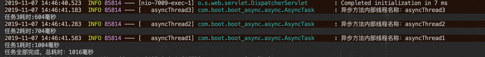
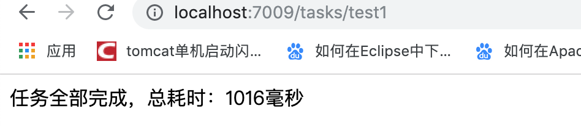

1.14.1. Spring Boot 中使用异步调用(线程池)
使用场景: 发送短信 发送邮件 App消息推送 节省运维凌晨发布任务时间提供效率
项目地址:https://github.com/heng1234/springboot2.x/tree/master/boot_async
1.14.1.1. 开启异步
首先得在Spring Boot入口类上加上@EnableAsync注解
import org.springframework.boot.SpringApplication;
import org.springframework.boot.autoconfigure.SpringBootApplication;
import org.springframework.scheduling.annotation.EnableAsync;
@SpringBootApplication
@EnableAsync//开启异步
public class BootAsyncApplication {
public static void main(String[] args) {
SpringApplication.run(BootAsyncApplication.class, args);
}
}
1.14.1.2. 自定义异步线程池
默认情况下的异步线程池配置使得线程不能被重用，每次调用异步方法都会新建一个线程，我们可以自己定义异步线程池来优化
AsyncPoolConfig
import org.apache.tomcat.util.threads.ThreadPoolExecutor;
import org.springframework.context.annotation.Bean;
import org.springframework.context.annotation.Configuration;
import org.springframework.scheduling.concurrent.ThreadPoolTaskExecutor;
/**
* @author : kaifa
* create at: 2019-11-07 14:38
* @description: 自定义异步线程池
*/
@Configuration
public class AsyncPoolConfig {
/**
*
* ThreadPoolTaskExecutor的一些方法自定义了一个线程池，这些方法的含义如下所示：
*
* corePoolSize：线程池核心线程的数量，默认值为1（这就是默认情况下的异步线程池配置使得线程不能被重用的原因）。
*
* maxPoolSize：线程池维护的线程的最大数量，只有当核心线程都被用完并且缓冲队列满后，才会开始申超过请核心线程数的线程，默认值为Integer.MAX_VALUE。
*
* queueCapacity：缓冲队列。
*
* keepAliveSeconds：超出核心线程数外的线程在空闲时候的最大存活时间，默认为60秒。
*
* threadNamePrefix：线程名前缀。
*
* waitForTasksToCompleteOnShutdown：是否等待所有线程执行完毕才关闭线程池，默认值为false。
*
* awaitTerminationSeconds：waitForTasksToCompleteOnShutdown的等待的时长，默认值为0，即不等待。
*
* rejectedExecutionHandler：当没有线程可以被使用时的处理策略（拒绝任务），默认策略为abortPolicy，包含下
* callerRunsPolicy：用于被拒绝任务的处理程序，它直接在 execute 方法的调用线程中运行被拒绝的任务；如果执行程序已关闭，则会丢弃该任务。
*
* abortPolicy：直接抛出java.util.concurrent.RejectedExecutionException异常。
*
* discardOldestPolicy：当线程池中的数量等于最大线程数时、抛弃线程池中最后一个要执行的任务，并执行新传入的任务。
*
* discardPolicy：当线程池中的数量等于最大线程数时，不做任何动作。
*
* */
@Bean
public ThreadPoolTaskExecutor asyncThreadPoolTaskExecutor(){
ThreadPoolTaskExecutor executor = new ThreadPoolTaskExecutor();
executor.setCorePoolSize(20);
executor.setMaxPoolSize(200);
executor.setQueueCapacity(25);
executor.setKeepAliveSeconds(200);
executor.setThreadNamePrefix("asyncThread");
executor.setWaitForTasksToCompleteOnShutdown(true);
executor.setAwaitTerminationSeconds(60);
executor.setRejectedExecutionHandler(new ThreadPoolExecutor.CallerRunsPolicy());
executor.initialize();
return executor;
}
}
@Async 注解上指定线程池Bean名称
import lombok.extern.slf4j.Slf4j;
import org.springframework.scheduling.annotation.Async;
import org.springframework.scheduling.annotation.AsyncResult;
import org.springframework.stereotype.Component;
import java.util.concurrent.Future;
/**
* @author : kaifa
* create at: 2019-11-07 09:50
* @description: 异步类
* @Async标注为异步方法
* 如果有返回值需要用Future方式返回
*/
@Component
@Slf4j
public class AsyncTask {
@Async("asyncThreadPoolTaskExecutor")
public Future<Boolean> doTask11() throws Exception {
long start = System.currentTimeMillis();
Thread.sleep(1000);
long end = System.currentTimeMillis();
log.info("异步方法内部线程名称：{}", Thread.currentThread().getName());
System.out.println("任务1耗时:" + (end - start) + "毫秒");
return new AsyncResult<>(true);
}
@Async("asyncThreadPoolTaskExecutor")
public Future<Boolean> doTask22() throws Exception {
long start = System.currentTimeMillis();
Thread.sleep(700);
long end = System.currentTimeMillis();
log.info("异步方法内部线程名称：{}", Thread.currentThread().getName());
System.out.println("任务2耗时:" + (end - start) + "毫秒");
return new AsyncResult<>(true);
}
@Async("asyncThreadPoolTaskExecutor")
public Future<Boolean> doTask33() throws Exception {
long start = System.currentTimeMillis();
Thread.sleep(600);
long end = System.currentTimeMillis();
log.info("异步方法内部线程名称：{}", Thread.currentThread().getName());
System.out.println("任务3耗时:" + (end - start) + "毫秒");
return new AsyncResult<>(true);
}
}
controller测试
import com.boot.boot_async.async.AsyncTask;
import org.springframework.beans.factory.annotation.Autowired;
import org.springframework.web.bind.annotation.RequestMapping;
import org.springframework.web.bind.annotation.RestController;
import java.util.concurrent.Future;
/**
* @author : kaifa
* create at: 2019-11-07 10:05
* @description: 测试异步方法controller
*/
@RestController
@RequestMapping("tasks")
public class DoTaskController {
@Autowired
private AsyncTask asyncTask;
@RequestMapping("test1")
public String test1() throws Exception {
long start = System.currentTimeMillis();
Future<Boolean> a = asyncTask.doTask11();
Future<Boolean> b = asyncTask.doTask22();
Future<Boolean> c = asyncTask.doTask33();
while (!a.isDone() || !b.isDone() || !c.isDone()) {
if (a.isDone() && b.isDone() && c.isDone()) {
break;
}
}
long end = System.currentTimeMillis();
String times = "任务全部完成，总耗时：" + (end - start) + "毫秒";
System.out.println(times);
return times;
}
}
访问 http://localhost:7009/tasks/test1

